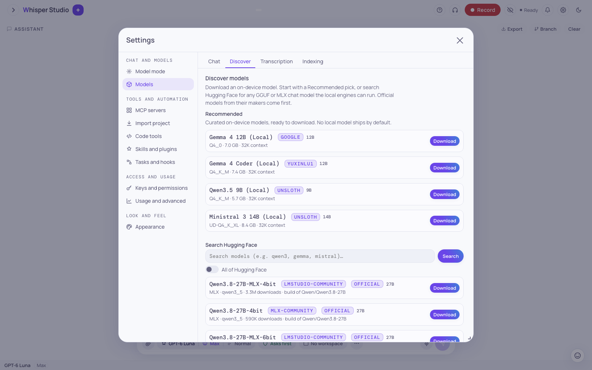

Model modes
Select where indexing, retrieval, and chat run: cloud, hybrid, or fully local. One setting selects if embeddings, the reranker, and entity extraction use Amazon Bedrock or stay on your Mac. The same setting selects which chat models you can use.
Example: you want to index a private repository and keep all the data on your Mac. Or you want a small install and let Bedrock do the work. Model mode is the one setting for this choice. This tutorial helps you select the correct mode.
The goal
Select where the indexing and RAG stack runs. When you index a folder for semantic search, three functions do the work:
- An embedder changes text into vectors.
- A reranker changes the sequence of the top results. The reranker is optional. The
rag_rerankerflag turns it on, and the default is off. - An entity extractor finds names and relations for the entity graph.
Model mode sets if these functions run in the cloud, on-device, or in a mix.
Model mode also controls chat. You select the chat model in the "How it thinks" control of the composer. Model mode (Settings → Chat and models → Model mode) sets which chat models that control shows:
- Cloud mode shows only cloud models.
- Local mode shows and runs only on-device models. It refuses a cloud chat turn.
- Hybrid mode shows the two types of models.
The three modes
The config key model_mode stores the mode. This table shows the backends of each
mode:
| Mode | Embeddings | Reranker | Entity extraction | On-device weights |
|---|---|---|---|---|
| Cloud | Cohere Embed v4 (Bedrock) | Cohere Rerank 3.5 | Claude Haiku | None. The install is small. |
| Hybrid | Selected for each function | Selected for each function | Selected for each function | The index weights download at the first index build. |
| Local (the default of a new install) | Qwen3 (on-device) | Qwen3 Reranker | GLiNER | The index weights download at the first index build. |
Whisper Studio has no local chat model after the install. "On-device weights" in the table means only the index and RAG stack: the embedder, the reranker, and the entity extractor. An on-device chat model is a separate download from Settings → Chat and models → Models → Discover (see below).
Cloud
Embeddings and reranking use Cohere on Amazon Bedrock. Entity extraction uses Claude Haiku. Nothing runs on-device, so the install does not need the index weights. This is the smallest setup and the fastest to start. Chat uses only cloud models. Select this mode when indexing can use Bedrock, and its cost is acceptable.
Hybrid (for each function)
In Hybrid mode, you select a backend for each function. The backends config key
stores these choices:
embed:cohereorqwen3.rerank:cohereorqwen3.ner:haiku,gliner, or the key of an on-device chat model.index_llm:haiku, the key of an on-device chat model,local(the active on-device model), ornone.
A function without a value uses the cloud backend. The on-device index weights download the first time that an on-device backend runs. Select this mode when you want a mix, for example local embeddings for privacy and the cloud reranker for quality. Chat can use cloud and on-device models.
The entity extractor of the entity graph is a separate
setting. Each workspace has a ner_model choice (GLiNER or the larger GLiNER2) in
the Index settings panel of the folder. The backends.ner function is for queries
and summaries, not for the extractor during indexing.
Local (fully on-device)
All of the index and RAG stack runs on your Mac: Qwen3 for embeddings, the Qwen3 Reranker, and GLiNER for entity extraction. Indexing and retrieval do not call Bedrock. Thus no data of your indexed folders goes off your Mac. A new install starts in this mode.
Local mode runs chat only on an on-device model. A new install has no on-device chat model. Thus the model picker is empty in Local mode and shows a hint. Do one of these steps:
- Install an on-device model from Settings → Chat and models → Models → Discover.
- Set Settings → Model mode to Hybrid or Cloud to use cloud models.
Install an on-device chat model from Discover
Hybrid mode and Local mode can run the index stack on-device. But they do not give you a chat model. You download an on-device chat model from Settings → Chat and models → Models → Discover. Start with a Recommended model (Gemma 4 12B, Gemma 4 Coder, Qwen3.5 9B, Ministral 3 14B). Or search Hugging Face for a GGUF or MLX chat model that the local engines can run.
The search shows only trusted publishers, unless you turn on the All of Hugging Face toggle. Before the download, the app compares each result with the memory of your Mac. Thus you know if the model fits.
The search shows official models first. An official model comes from the organization that
made it, for example Qwen or deepseek-ai. A build of an official model
is also official, for example unsloth/Qwen3.8-27B-GGUF. Then the search shows the
models from the trusted publishers, and then the other results. In each group, the models with
the most downloads come first.
Discover shows only the models that the installed engines can run. It reads the list of architectures from the installed llama.cpp and mlx-lm. Thus, an engine update adds models with no change to the app. If the engines cannot run a build of an official model, Discover shows the model and the reason. You cannot download that model.

Memory fit
The app compares the memory that a model uses with a memory budget. The budget is 75% of the total memory of your Mac. The app subtracts the size of the speech recognition model and the speaker model, because these models can stay in memory during a chat.
A local model uses memory for 3 items: the model file, the KV cache, and the compute buffers of llama-server. When llama-server loads a model, it creates the KV cache for the full context window. For a GGUF model, the app reads the header of the GGUF file before the download. The app reads only the start of the file, usually 64 KB. If the model is on your Mac, the app reads the local file. The header gives the layers, the attention heads, and the sliding window of the model.
From these values, the app calculates the KV cache at the context window that the install writes. For most models, this context window is 32K tokens. At 32K tokens, the KV cache of Ministral 3 14B is 5 GiB. The KV cache of Qwen3.5 9B is 1 GiB, because only 1 layer of each 4 layers keeps a cache. The KV cache of Gemma 4 12B is approximately 1 GiB, because 40 of its 48 layers keep only a window of 1,024 tokens.
The memory for the model is the sum of the file size, the KV cache, and 1 GiB for the compute buffers. If this sum is more than the budget, the row shows "won't fit". If the sum is more than 85% of the budget, the row shows "tight fit". Example: on an 18 GB Mac, the budget is 13.5 GiB. Ministral 3 14B uses 13.8 GiB at 32K tokens, thus the row shows "won't fit".
If the app cannot read the header, the app adds 2 GiB to the file size. This also applies to an MLX model, because an MLX model has no GGUF header. The llama-server process also keeps a prompt cache and context checkpoints in memory. The app limits these caches to the part of the budget that the model does not use. Thus a model that fits also stays in the budget during a long chat. If the model does not fit, the size of the prompt cache is 0.
The installation of an on-device chat model can also change one setting. In Local mode and
Hybrid mode, if backends.index_llm is haiku, the app sets it to
local. Then the summaries and relations of index_llm use your
on-device model, not Haiku. You can change the value again in the Model mode tab.
An installed model has a Local badge in the picker. The menu of a model row has Delete downloaded files and Remove from list. The first item deletes the weights and keeps the model in the list. The second item removes the model from the picker.
When the download of a local chat model is complete, the app does a tool-call check on the model. The app loads the model as for a chat turn. Then the app sends the same first chat turn 5 times. This turn asks for the bugs in a connected workspace and gives the full tool list of the first round. No tool runs. A test passes when the answer is a call to a tool from that list, with arguments of the types in the tool schema.
The check stops at the first test that fails. On an 18 GB Mac, the check runs for approximately 2 minutes. While the check runs, the row of the model in Settings → Chat and models → Models → Chat shows "Checking tool calls: test 2 of 5". After the check, the row shows "Tool calls: 5 of 5 tests passed." or a warning. The warning gives the number of the test that failed and the cause. It ends with "This model can chat, but it cannot reliably use the workspace or other tools."
If the check cannot run, the row gives the cause. An example is a model that does not load.
If a local chat turn with a different model runs, the check waits until the turn ends. If the
model was not in memory before the check, the app stops the model after the check. You cannot
delete the model while the check runs. A model without the supports_tools flag
gets no check.
Thinking levels on a local model
When you select a local model with a reasoning mode, the "How it thinks" control shows the Thinking level. The panel of the control has a Thinking row and a Context row for the on-device model. The levels are "Off", "Low", "Medium", "High", and "Max". "Max" is the default and has no token limit. "Low", "Medium", and "High" stop the reasoning at 1,024, 4,096, and 16,384 tokens. The answer gets its own tokens after the reasoning.
The level stays the same when you change to a cloud model and back. The cloud thinking level does not change.
The chat template of the model shows if the model has a reasoning mode. A template that reads
reasoning_effort, for example the template of gpt-oss, gets the level directly. For
other templates, llama-server stops the reasoning at the token limit of the level. mlx-lm cannot
limit the reasoning. Thus, an MLX model of this type shows only "Off" and "Max".
The two on-device engines
One of two local engines runs on-device chat. The app selects the engine from the model that you installed. You do not select the engine. The two engines have small differences.
| Engine | Models | Notes |
|---|---|---|
| llama-server (llama.cpp) | GGUF weights, one file for each quantization | The Mac app contains the binary. setup.sh installs the same build into vendor/llama. llama-server has the tool-call and reasoning parsers of each model. Thus a new GGUF model gets tools and a thinking channel without a code change. You set the context window in the Context row, from 32K tokens up. A change reloads the model. |
| mlx_lm server (MLX) | MLX snapshot folders | Runs in the Python of the app. The app loads the weights at the first request, so it sends a warmup call when it loads the model. mlx_lm has no context-size flag. Thus the window comes from the config of the model, and the Context row only shows it. |
Only one on-device model is in memory at a time, across the two engines. Chat weights and the speech stack use the same unified memory. When you select a different model, it replaces the current model. If a turn streams, the change waits until the turn ends.
What stays local in all modes
Two items do not change with the mode:
- Transcription is always on-device. Whisper, Parakeet, and the Canary translator run on your Mac in all modes. Audio does not go off your Mac. See Voice & meetings.
- Each embedder keeps its own index. The cloud embedder and the local embedder make different vectors, so they keep separate indexes. A mode change does not rebuild or delete the other index. But a folder that you indexed with one backend is not available to the other backend until you index it again.
If a folder gives no results after a mode change, the cause is usually the embedder. You indexed that folder with the other embedder. Index the folder again in the new mode. The old index stays for when you change back.
Regions
Cohere embed and rerank run in the Bedrock Region that you set in Settings, as chat and
all other Bedrock calls do. Embed uses its global inference profile
(global.cohere.embed-v4:0). Rerank has no global profile, so it runs in the Region.
The default Region, us-east-1, has the two models. Rerank 3.5 is not available in
all Regions. If a rerank call fails, the search keeps the order of its fused results.
Change the mode
A new install starts in Local mode, for setup.sh and for the Mac app. Change the
mode in the app.
-
Open the Model mode tab
Open Settings (the gear icon). Go to Chat and models → Model mode.
-
Select the mode
In the Mode list, select Cloud (all Bedrock), Hybrid (pick per capability), or Local (all on-device). In Hybrid mode, four lists show below it: "Embeddings (search index)", "Reranker", "Entity extraction", and "One-shot writer (summaries)".
-
Reload the app
After you save, a banner shows. The banner does not block the panel, so you can complete the Hybrid choices first. Click Reload now on the banner. The app starts again in the new mode, loads or releases the on-device models, and starts the index stack on the selected backends.
Make sure that you have approximately 5 GB of free disk space before the first index build. The app downloads the on-device index weights (Qwen3 embedding, GLiNER, and the Qwen3 reranker) at that time, not before. The download takes one or two minutes. A mode change does not download a local chat model.
First start
Each new install starts in Local mode, for setup.sh and for the Mac app.
The app writes Local mode and the on-device index backends into your user config one time. The
weights download when the app needs them. A dialog with the heading "You're in Local mode" explains the three modes. The dialog has the buttons Open model settings and
Got it. Indexing and chat do not use the cloud until you change to Hybrid or Cloud.
First, config.example.json contains
"model_mode": "cloud". That file is the lower SYSTEM layer. The first-run value
local in your user config has priority. Second, the backends map in
your user config has no effect in Local mode. It applies when you change to Hybrid mode. For this
reason, the first-run value of index_llm is Haiku, because you do not have an
on-device model yet.
Which mode to select
Select Cloud if
You want the smallest install and the fastest start. Indexing and chat on Bedrock are acceptable, and your indexed data does not have to stay on your Mac.
Keep Local if
The data of your folders and your chats must stay on your Mac. You accept some gigabytes of weights and local compute. Install an on-device chat model to chat.
Select Hybrid if
You want to select a backend for each function, for example local embeddings for privacy and the cloud reranker for quality. You can use cloud and on-device chat models.
Not sure?
Keep Local and install an on-device chat model, or select Hybrid to also use cloud chat models. You can change the mode later without a loss of data. Each backend keeps its own index.
The config keys
The Settings tab writes these keys to your user config,
config.user.json. For the Mac app, the file is in
~/.whisper. For a source install, the file is at the root of the
checkout.
model_modecloud, hybrid, or local. A new install writes local. The shipped config.example.json has cloud as the lower SYSTEM-layer value. server/infrastructure/model_mode.py reads the value. The mode also sets which chat models the picker shows: Cloud hides on-device models, Local hides cloud models, and Hybrid shows all. In Local mode without an on-device model, the picker is empty and shows an install hint.backendsembed, rerank, ner, and index_llm. A function without a value uses the cloud backend.For how the app reads these settings and selects the backend of each function, see Model backends & modes.
Related: Index & semantic search to index a folder and use retrieval. Configuration for the config layers. Model backends & modes for the backend selection at runtime.